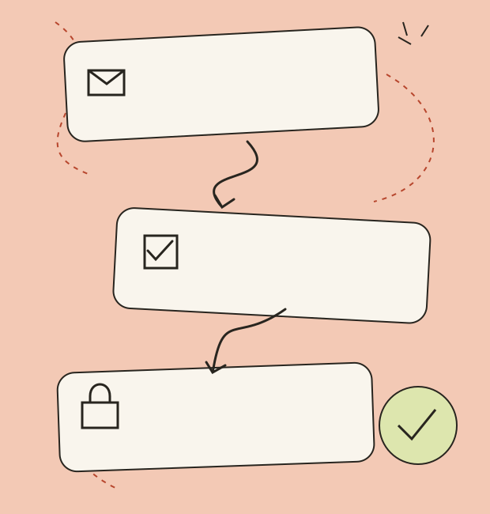

A useful beginning
Bring your own process.
Start with a recipe, then change the trigger, conditions and actions to fit the way your team actually works.
Good work deserves a better flow.
Independent software / Wymondham
A small connection can change your day
Give the copying, sorting and chasing somewhere else to go. Weftiq connects the small steps, so your team can stay with the work that needs a person.
Clear rules. Human checkpoints. Costs you can work out before you begin.

01 / FIND YOUR SMALL WIN
02 / AUTOMATION, WITH MANNERS
A good flow knows when to carry on and when to ask. Keep decisions visible, add a clear rule and make the next step easy to understand.
A useful beginning
Start with a recipe, then change the trigger, conditions and actions to fit the way your team actually works.
A visible middle
Run an event through your flow and read the decisions in order, including the steps that were skipped.
A considered handover
Summarise and classify when that saves a person a first pass. Keep final judgement with the team.
A clear bill
Task and AI allowances are separate. Change the volume and the plan calculator explains the difference.
03 / MAKE A LITTLE ROOM
Bring one repetitive task to a conversation. We will help you see the useful connection, and the bits best left alone.